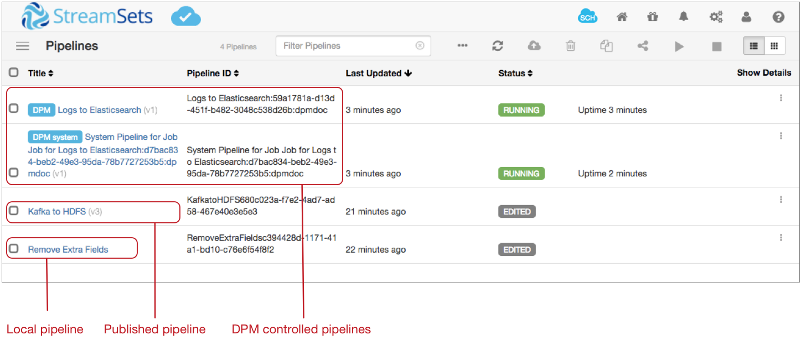

Pipeline Management with Control Hub
After you register a Data Collector with StreamSets Control Hub, you can manage how the pipelines work with Control Hub.
You develop pipelines in Data Collector, and then publish or import them to Control Hub. Within Control Hub, you create jobs to determine the Data Collectors that run the pipelines. When you start a job on a group of Data Collectors, Control Hub remotely runs a pipeline instance on each Data Collector.
Managing pipelines with Control Hub involves completing the following tasks:
- Understanding the different types of pipelines that can run on a registered Data Collector.
- Publishing pipelines to Control Hub.
- Viewing pipeline commit history, and optionally getting a previous pipeline version.
- Downloading published pipelines from Control Hub.
If you have not registered a Data Collector, you can still develop pipelines in the Data Collector and then export the pipelines for use in Control Hub.
Pipeline Types
- Local pipelines
- Local pipelines are pipelines that are managed by a Data Collector and run locally on that Data Collector. Data Collector displays local pipelines when they are running and not running.
- Published pipelines
- Published pipelines are local pipelines that have been published to Control Hub. You can still use Data Collector to manage and locally run published pipelines on that Data Collector. Data Collector displays published pipelines with the current version number, and when they are running and not running.
- Control Hub controlled pipelines
- Control Hub controlled pipelines are pipelines that are managed by Control Hub and run remotely on registered Data Collectors. Data Collector displays Control Hub controlled pipelines when they are running.
Viewing Pipeline Types in Data Collector
Let's look at a sample Data Collector Home page to see how Data Collector displays local pipelines, published pipelines, and Control Hub controlled pipelines:

The Data Collector displays the following pipelines:
- Local pipeline that was developed in this Data Collector and can be run locally on this Data Collector. Local pipelines are listed by title. In the image above, Remove Extra Fields is a local pipeline that is not running. The Remove Extra Fields pipeline has not been published to Control Hub, as indicated by no version number after its title.
- Published pipeline that was published to Control Hub and can still be run locally on this Data Collector. Published pipelines are listed by title and version number. In the image above, Kafka to HDFS is a published pipeline that is not running.
- Running published pipeline that was published to Control Hub, then run from a job. Published pipelines that are remotely run from jobs are listed with a "Control Hub" label.
- Running system pipeline that collects, aggregates, and pushes metrics for all of the remote pipeline instances run from the job. Running system pipelines are listed with a "Control Hub system" label.
Publishing Pipelines to Control Hub
After you finish developing pipelines in Data Collector, you publish the pipelines to the Control Hub pipeline repository. You can publish pipelines that are valid.

-
From the Home page, select pipelines in the list and
then click the Publish Pipeline icon . Or to publish a pipeline from the pipeline canvas, click the
Control Hub Options icon
 , and then click Publish
Pipeline.
The Publish Pipeline dialog box appears.
, and then click Publish
Pipeline.
The Publish Pipeline dialog box appears.
Reverting Changes to Published Pipelines
If you update a published pipeline but decide not to publish the updates as a new version, you can revert the changes made to the pipeline configuration.
-
In the pipeline canvas, click the Control Hub Options
icon , and then click Revert
Changes.
- In the confirmation dialog box, click Yes.
Viewing Pipeline Commit History
You can view the commit history of any pipeline that has been published to Control Hub. If the pipeline has been committed multiple times, you can get an older version of the pipeline and then continue editing the older version.
If you edit and then publish an older version, Control Hub updates the minor version number rather than the major version number. For example, you have a pipeline with three versions. You get version 2 of the pipeline, edit the pipeline, and then publish the pipeline. Control Hub versions the current pipeline as 2.1. So you now have four versions of the pipeline, with version 2.1 of the pipeline marked as the current version:
- 2.1
- 3
- 2
- 1
To view pipeline commit history:
-
In the pipeline canvas, click the Control Hub Options
icon , and then click Commit
History.
The Pipeline Commit History dialog box opens. For example, a pipeline with three versions displays the commit history as follows:

Downloading Published Pipelines
When you download a pipeline from Control Hub, you become the owner of a local instance of the published pipeline. The downloaded pipeline has no connection to the published pipeline.
Exporting Pipelines for Control Hub
If you develop pipelines in a Data Collector that is not registered with Control Hub, export valid pipelines for use in Control Hub.
If you develop pipelines in a Data Collector that is registered with Control Hub, publish the pipelines directly to Control Hub.
You can export a single pipeline or a set of pipelines. When you export pipelines for Control Hub, Data Collector exports the pipelines without plain text credentials.